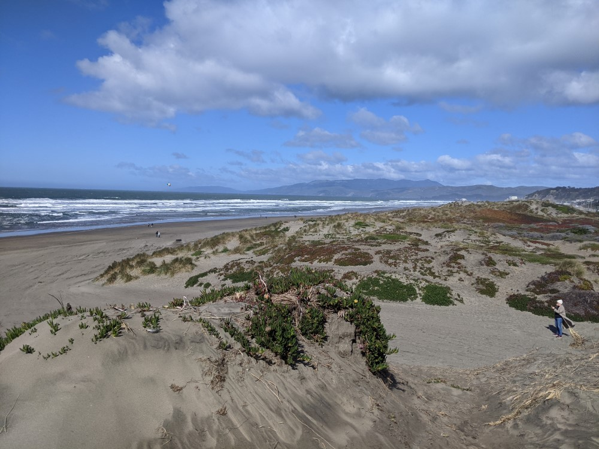
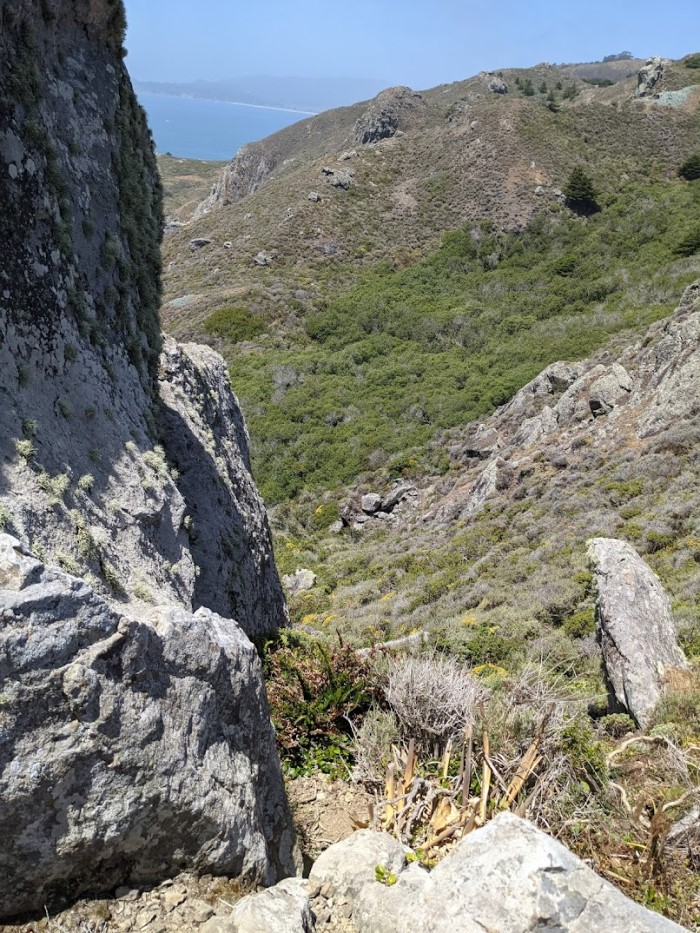
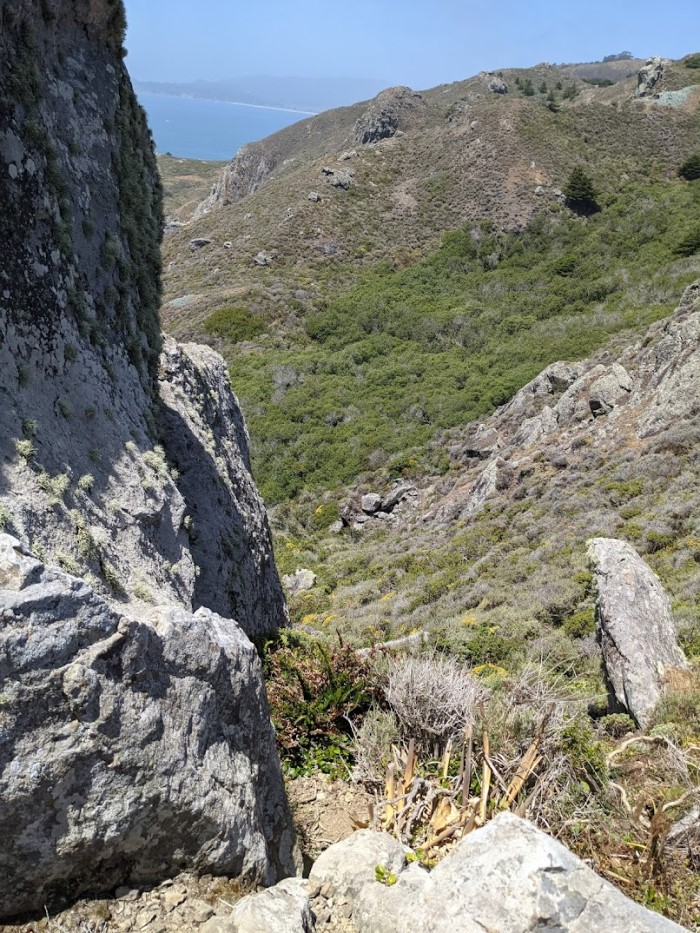

Cool Places Part 1: Sand, Sea and Scrubland
If like me you live in a city, it's easy to forget what the wilderness actually looks like. Prompted by a discussion in the Map Crow discord, I decided to put together some images of cool places I've been. I'm not a particularly skilled or experienced photographer, but I think these capture some ideas that are maybe a bit more unique than what immediately comes to mind when trying to remember what the wilderness looks like when sitting at home. Hopefully some of these are a bit unique to where I live, and so might be new to people who live elsewhere and spark some inspiration. If anyone else wants to make a similar blog post, I'd love to link to it.
This is part 1 because I got bored of doing this halfway through putting it together.
I've also made some previous products around specific natural environments. Don't get bogged down (text available for free under "Demo") talks about peat bogs, and Rain Check, some environmental challenges for 5e (full text in preview).
Feel free to use any of these images for whatever if they happen to be useful.
Coastal Sand Dunes
Here these extend further inland than most people realize. You get large hills that are sandy underfoot, but still pretty solid, and strange and twisty trees. These woodlands are generally fairly open, with hills that are easy to navigate.

Even very large hills might be sand underfoot.

Closer to shore the dunes are bare, swept by the wind, although smaller plants hold them together. The ground is unstable and always shifting. On windy days the sand blows sharply into your eyes when you face the wrong way.
By the sea, fog is prevalent. Between the hills and the sea, it is much colder, and even in the middle of summer may not get very warm. On particularly windy days, the land can shift dramatically. Things can get buried, or uncovered.
Rocky coast
Sharp cliffs to the sea; the sea is only accesible with careful climbing, but it's possible to get there. The danger of a fall, if you go off course. If it's windy, trees here are few and small, the wind is aggressive. But as soon as you round the corner there's dense forest again - or not, depending on the place.
 

Even with the wind keeping the forest clear, though, the terrain can be varied and treacherous. These two photos are a few minutes down the same path as the latter photo:
When the rocky coast is closer to sea level, you get some cool patterns. Imagine this scaled up really big - I remember such things from my childhood, before I had a camera phone.

Scrubland
Dry and hot, but not devoid of agriculture. Irrigation happens in the modern day, at a steep cost to the environment. Cattle are prevalent. It's hot, with little to no shade, and you have to think about water. Views are fantastic, and you can see a stranger as soon as they round a hill. In the past presumably horses would have been important for getting around - this isn't quite the sort of places Westerns were set, but not too far off.
These photos was taken with the cool "train window" filter:
Even with more vegetation, it can get dangerously hot with no shade, as I learned on a hike I had to cut short here:
Volcanic hills
These "morro" hills look cool and stand alone, remants of an earlier mountain range. You can climb them for a good view.
This one, close to the sea, is bare and rocky, they can look stranger up close, especially in the fog. Climbing them might require special skills: what strange beings live at the top or in the crvices? Only the brave and bold might go find out.
If you look closely, the wind has worn strange burrow-like holes in the rock. What mythical creature might live there?
Bonus pictures of the remnants of blasting.
Marshy areas
I have made an entire supplement about bogs, which you can find here.
I also have some pictures of salt flats: Many birds, lots of visibility in some places, short shrubs in others - up to about head height, tall enough to hide behind. The path is a boardwalk - probably partly to protect the environment, but I suspect you'd sink into the muck if you strayed too far.